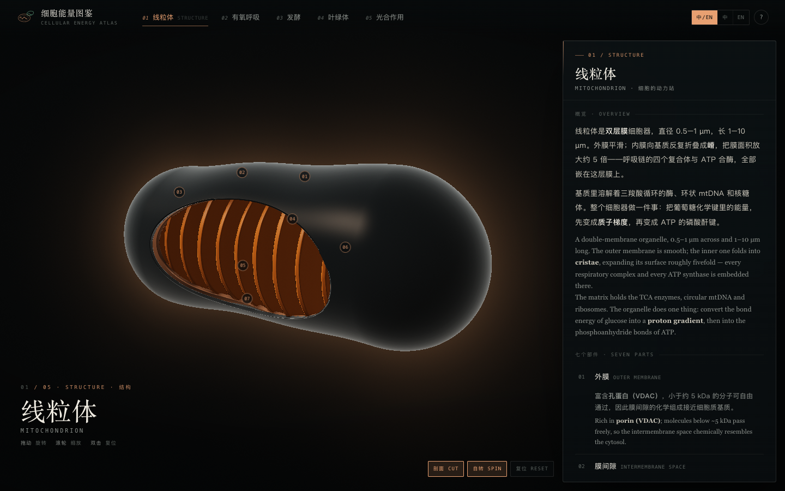
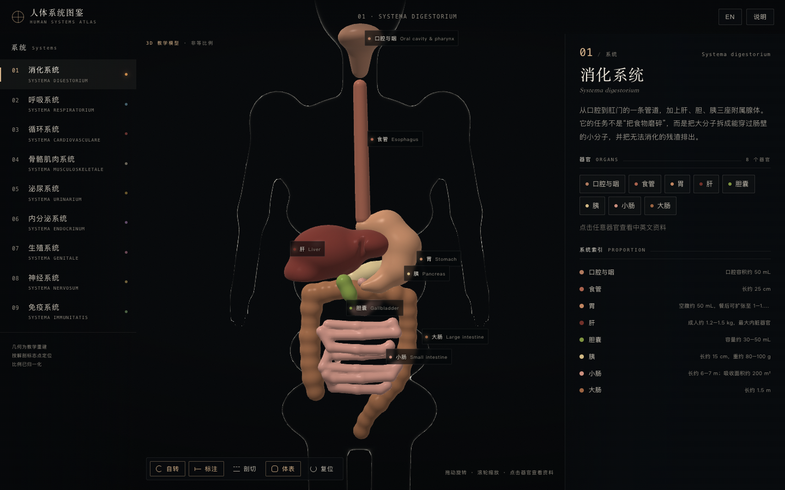

FIELD / Biology
生物学
Biology从细胞、人体系统到生命活动，观察生命结构与功能。
AVAILABLE LESSONS / 06
选择一个演示，开始探索
点击卡片即可直接打开演示。
 LESSON / 01
LESSON / 01植物细胞模型
Plant Cell Model旋转植物细胞，点选 11 种细胞器查看结构与功能。细胞器大小和位置经过视觉化处理。
11 种细胞器 · WebGL 2 · 3D 交互直接进入演示 LESSON / 02
LESSON / 02动物细胞模型
Animal Cell Model旋转并剖切动物细胞，点选 16 种结构查看中英文说明；模型尺寸经过视觉化处理。
16 种结构 · Three.js · 中英切换直接进入演示 LESSON / 03
LESSON / 03细菌图鉴
Bacteria Atlas探索 12 种细菌与六类形态，旋转程序生成的群体模型，并查看逐张署名的显微图像。
12 个标本 · 6 类群 · 3D · 显微图像直接进入演示 LESSON / 04
LESSON / 04病毒图鉴
Virus Atlas探索七类代表病毒的结构、基因组与复制策略，并对照真实电子显微镜图像。
7 种病毒 · 3D 模型 · 电镜对照 · 来源署名直接进入演示
LESSON / 05细胞能量图鉴
Cellular Energy Atlas探索线粒体、叶绿体、呼吸、发酵与光合作用，并查看两张独立的 AI 教学结构图。
3D 结构 · 分步过程 · 双语 · 两张功能图直接进入演示
LESSON / 06人体系统图鉴
Human Systems Atlas旋转人体模型、切换系统、剖切结构并点选器官，查看中英文说明。
9 大系统 · WebGL 交互 · 中英切换直接进入演示